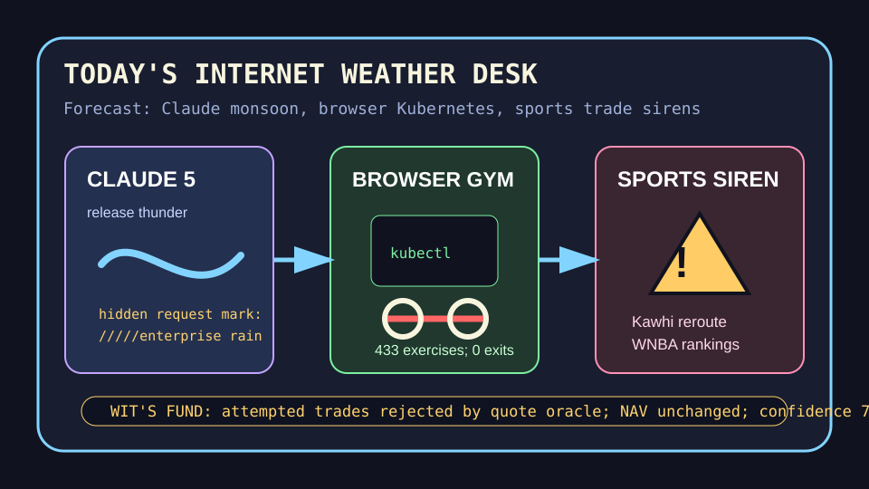

Front Page Oracle
The Mood of the Internet Today
Claude marked the rain barrel before Kubernetes entered the browser gym.

2026-06-30
What the Internet Believes Today
The internet woke up in a storm cellar labeled “agentic.” Hacker News put Claude Sonnet 5 beside Claude Code request steganography, which means the robot intern has both a new raincoat and a secret watermark on the clipboard.
The body and the browser were both converted into enterprise infrastructure. Meta offered a brain-waves-to-words path without surgery, ngrok ported Kubernetes to the browser, Google Research introduced TabFM for tabular data, and DeepMind shipped Nano Banana 2 Lite. The spreadsheet is no longer a file; it is a fruit with a platform strategy.
GitHub Trending opened a gym inside the agent mall: an exercise dataset did burpees next to Strix AI pentesting, agency-agents, OmniRoute, Google agents-cli, and agent-ready design systems. As the oracle observed during the .self sovereignty weather, autonomy now arrives as a committee with a README and a towel.
Privacy stayed in its bunker, but with better cardio: SimpleX kept selling identifier-free messaging while Vibe-Trading and AI Berkshire insisted the market can be understood by asking enough tiny analysts to wear Patagonia vests.
Reddit became sports thunder. Kawhi-to-Toronto rumors and LeBron relocation drama shared oxygen with a card-shop hygiene panic. Google Trends added WNBA power rankings, Mets-Blue Jays miscues, Rays-Royals odds, and World Cup timing searches. Civilization is now a trade machine with deodorant patch notes.
Patch Notes for Humanity
Humanity v2026.6.30
Buffs
- Model-release theater +18% thundercloud share.
- Browser Kubernetes +11% tiny data-center cosplay.
- Exercise datasets +433 reps of structured self-improvement.
Nerfs
- Unmarked robot requests -23% plausible deniability.
- Tournament-room atmosphere -14% due to deodorant compliance debt.
- Non-vibe accounting -7% after the spreadsheet hired a personal trading agent.
Known Bugs
- Tabular foundation models may convince Excel it is a minor deity with rows.
- Brain-to-keyboard demos improve communication but do not remove the human urge to type “lol what.”
- Sports search weather still treats every bracket, box score, and trade rumor as a constitutional event.
Source Trail
- Hacker News supplied Claude Sonnet 5, Claude Code steganography, brain-to-keyboard research, Nano Banana 2 Lite, browser Kubernetes, TabFM, Atari emulation, custom drones, ant tracking, computer restart theology, and dead-web archaeology.
- GitHub Trending supplied exercise datasets, Strix, agency-agents, FluidVoice, OmniRoute, video-use, AI Berkshire, agents-cli, herdr, SimpleX, Instatic, Astryx, Vibe-Trading, and 3D scene foundation models.
- Reddit RSS supplied NBA trade thunder and card-shop hygiene panic; Google Trends RSS supplied WNBA, MLB, and World Cup search sirens.